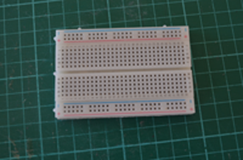
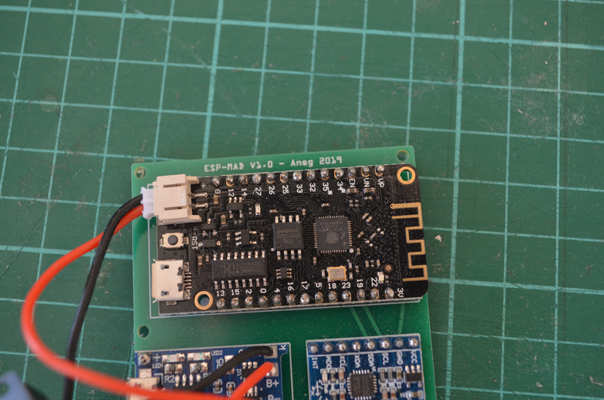
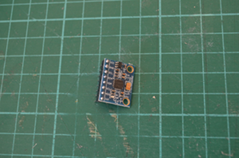
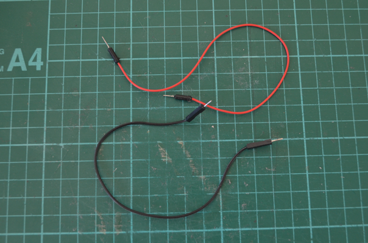
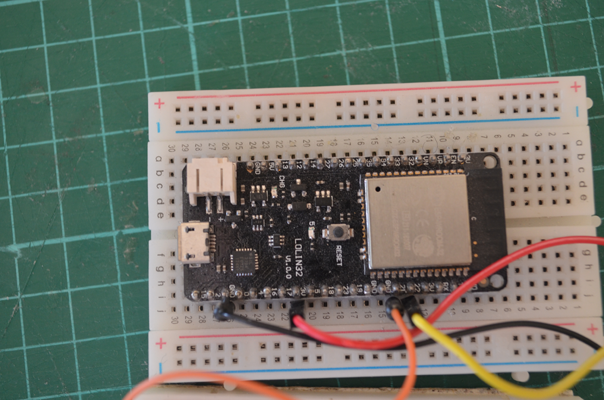
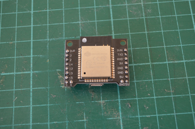
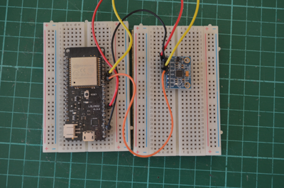
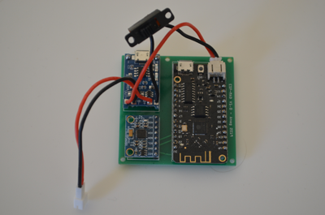
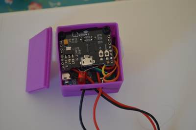

Get Started¶
The objective of this project is to design a board based on an ESP-WROOM-32 module from the company Espressif and an MPU6050 component from the company Invensense.
- The design process is based on 3 steps:
Prototyping of the concept from demoboards
Software development based on the prototype
Board design (schematic and routing).
The Get started section presents the first part of the process, i.e. the prototyping phase.
Introduction¶
The principle of the project is based on the use of two (or more) completely identical boards that communicate using Wifi, on an ad’hoc network (define as ESP_MAD network).
One of the board (named « Server ») is initialized in Acces Point (AP) mode. The other boards initialize in Station mode (STA) (named « Client(s) »).
The « Server » board and the « Client » board(s) use similar software, but slightly different because of this specificity of Wifi configuration.
The « Server » board integrates a web server, which allows any web browser to connect to the « Server » board and to navigate on the developed HTML pages (so, connection are possible with all the devices equiped with a a web browser like a PC, a Tablet or a Smartphone under Android or IOS).
The HTML pages are developed using the Bootstrap framework for the layout and JQuery for the Javascript calls embedded in the pages.
Note
To date, the software development only takes into account one client board.
Functional requirement¶
- The main features requirement from the system are the following:
Measurement of control surface deflection in either Angle or mm,
At least two LEDs :
One to indicate that the circuit is in operation « during calibration of the MPU6050 » or in measurement mode after calibration,
the other to indicate that the battery is charging.
Recording and display of maximum and minimum deflection (in angle and mm),
Minimum management of a « Client » board in order to adjust two control surfaces at the same time and ensure « identical » deflection on both control surfaces (aileron, flap, elevator, etc),
Possibility to change the control surface chord (due to the use of the MPU6050 which allows to recover angles, this feature is mandatory),
Possibility to easily change the UI of the web interface,
Battery powered,
In order to be able to be installed on a small control surface, a casing with a maximum form factor of 41 mm x 41 mm x 20 mm is targeted,
The design of the casing must incorporate :
A USB interface for reprogramming the ESP-WROOM-32 module and recharging the battery,
An on-off button allowing to recharge the battery without powering the rest of the circuit.
In must-have, it will eventually be possible to manage up to 5 « Client » boards at the same time in order to be able to adjust the 6 control surfaces of an F3F glider.
What do you need¶
During the protyping phase, we will use somme breadboards, a development board integrating an ESP-WROOM-32 module, a development board integrating an MPU6050, as well as some prototyping wires.
These components can be easily found on the internet (Bandgood, Alliexpress, etc.), for a few euros.
 |
 |
 |
 |
Breadboard |
Lolin32 demoboard |
MPU6050 demoboard |
Prototyping Wires |
Several demonstration boards based on ESP-WROOM-32 can be used
I personally used the following boards without any problem.
 |
 |
|
Wemos Lolin 32 |
Wemos Lolin 32 lite |
Wemos clone |
The last board in this table has a Wemos marking, but does not appear to come from the company of the same name. However, it works very well and is a little smaller than the two Lolin 32 Wemos (But this board, unlike the Lolin cards, has no battery connector and therefore no charging circuit). You can easily find this board by doing a search on the net of the type « compact ESP32 board ».
Avertissement
On some ESP32 boards, in particular the Wemos clone, it is essential to switch the card to « boot » mode during the software loading operation. This board has two buttons, an « EN » button which is actually the reboot button, and a « Boot » button which allows you to switch the board to « Boot » mode when you launch an « idf.py flash » command.
First stage of prototyping : Basic connection diagram¶
I used this basic setup to develop the first version of the code, starting with the code for the « Server » board, then the code for the « Client » board. If you want to test it, you’ll have to use two « big » breadboards (one for the « Serveur », the other for the « Client) or 4 small ones (two for the « Serveur » and two for the « Client »).
The ESP32 demoboard is easily connected to the MPU6050 board using I2C.
So,
Lolin 32 |
MPU6050 |
|---|---|
pin 21-> |
pin SDA |
pin 22-> |
pin SCL |
pin 5V-> |
pin VCC |
pin GND-> |
pin GND |
Note
The ESP32 allows you to change the assignments of the I2C pins. To test this feature, I used different assignments on my three demoboards. These mappings are integrated in the esp_mad.h file. The figure above shows the connection diagram used with the Lolin 32 demoboard.
After completing this assembly, you must download the file esp-mad-server.bin obtained after compilation into your ESP32 demo card.
- The procedure for using the UI is as follows:
Leave the breadboard flat,
Connect the « Server » card via its USB port,
If your board is equipped with an embedded led, this led will blink very quickly to indicate that the system is in calibration phase of the MPU6050 (leave the breadboard flat during this phase). After a few seconds, the LED will switch to a slower flashing mode to indicate that the MPU6050 has completed its calibration,
Connect your PC or mobile phone to the Wifi network of SSID « ESP_MAD »,
Launch your internet browser,
Type in the URL bar of your browser « http://192.168.1.1 ».
The main page of the UI of the GliderThrow_Meter project will appear,
If you move the breadboard on which the MPU6050 is connected, the deflection values (positive and negative) will be displayed.
Second stage of prototyping¶
After this first step, I integrated on a small PCB, a Lolin32 Lite demoboard, an MPU6050 demoboard and a 1A 5V Micro USB Module Charger Module Board with Protection (ref. TP4056).
The result is encouraging and works perfectly, but the board has a form factor of 55 mm x 55 m (i.e. a casing close to 60 mm side) which is off target compared to the initial requirement.
Finally, I tried to integrate the « clone Wemos » demoboard which is more compact by stacking a PCB that integrates the MPU6050 board and the TP4056 board. We arrive at a form factor (excluding the casing) of 38mm x 38mm x 45mm, which is close to the target,but not totally satisfactory in terms of integration.
Following these two tests, I came to the conclusion that the integration of off-the-shelf boards would inevitably lead to a form factor that not stick the requirement and a low comfort of implementation.
However, this second prototyping stage enabled me to target the components needed for the integration of the boards, And I decided to design a new PCB integrating all of the components. So go to the Hardware Design section.